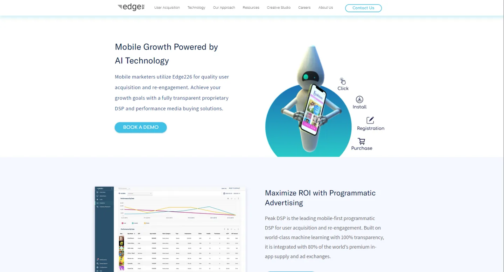
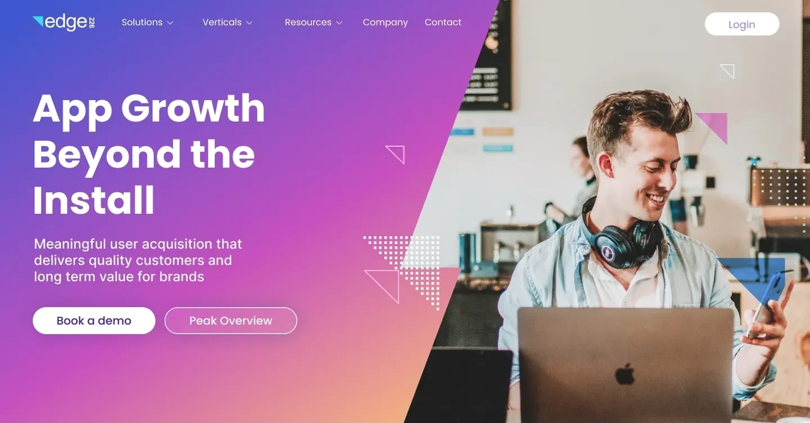

Rediseño del sitio y rebranding de Edge226
Explicar ad tech a quienes la compran
Edge226 es una plataforma de performance marketing multicanal: las apps y juegos mobile le pagan por instalaciones y compras, no por impresiones. Su sitio nunca lo decía. Junto con la líder de marketing de Edge226 rediseñé cada página, y lo que empezó como un proyecto de sitio web se convirtió en la nueva marca de la empresa.


- Rol
- Único diseñador, de punta a punta
- Trabajé con
- La líder de marketing de Edge226
- Alcance
- Arquitectura de información, todas las páginas, guía de estilos, rebranding
- Plataforma
- Sitio web, desktop y mobile
- Marca en uso
- Unos cuatro años
De un vistazo
El problema
Ocho ítems de menú con nombres de equipos internos, y ni una línea sobre lo que distinguía a Edge226: los clientes pagan por resultados.
Qué hice
Convertí los textos de marketing en páginas, rehice dos veces la arquitectura de información y armé una guía de estilos para desktop y mobile.
El resultado
El rediseño se convirtió en el rebranding. Edge226 pasó del azul al violeta y usó esa identidad durante unos cuatro años, online y en los stands de sus eventos.
El negocio
Una empresa que cobra cuando sus clientes crecen
Edge226 es una empresa de ad tech fundada en Israel, con oficinas en Tel Aviv y Nueva York. Su producto principal, Peak, es una demand-side platform: un software que compra espacios publicitarios en miles de apps en nombre de los anunciantes y usa machine learning para decidir adónde va cada dólar.
Sus clientes son apps y juegos mobile que buscan usuarios que se queden y paguen, en verticales como gaming, finanzas, viajes y delivery de comida. Desde entonces creció hacia la TV conectada y los anuncios con recompensa, y en 2026 compró AnyClip, una empresa de video con IA.
Cómo se mueve la plata
El modelo de negocio es todo el argumento del sitio
La mayoría de las plataformas publicitarias cobran por alcance. Edge226 cobra por resultados. Esa diferencia es lo que un visitante tiene que entender antes de que importe cualquier otra cosa en la página.
Una app define un objetivo
Instalaciones, depósitos, suscripciones o compras: la acción que vale plata para ese negocio.
La plataforma puja por espacios
Sus algoritmos compran ubicaciones en el inventario de las apps, buscando a los usuarios con más chances de actuar.
Un usuario actúa
Alguien ve el anuncio, instala la app y, idealmente, la sigue usando.
La app paga por el resultado
No por la impresión. El gasto está atado al objetivo definido en el primer paso.
El punto de partida
Un sitio organizado alrededor de la empresa, no de quien compra
El sitio original era azul y cian, con un robot en el hero y ocho ítems en el menú: User Acquisition, Technology, Our Approach, Resources, Creative Studio, Careers, About Us y Contact Us. Un marketer tenía que conocer la estructura interna de Edge226 para encontrar lo que vendía, y el precio por resultados aparecía apenas como una línea dentro de un párrafo.


La idea
Un nombre que viene del triatlón
226 kilómetros es la distancia de un triatlón completo: 3,8 nadando, 180 en bici, 42,2 corriendo. El nombre hablaba de resistencia y rendimiento, y el producto ya se llamaba Peak.
Así que el lenguaje visual sube. Los tres pilares de Peak, resultados garantizados, supply global y transparente, y rendimiento a través de la tecnología, rodean una cumbre en la home. La página de Peak abre con una montaña en el degradé de la marca. Todas las metáforas apuntan al mismo lado: hacia arriba, hacia el resultado por el que paga el cliente.


Cómo trabajamos
Marketing traía el mensaje. Yo lo convertía en páginas.
La líder de marketing de Edge226 fue mi contraparte durante todo el proyecto. Cada página pasó por el mismo ciclo hasta que decía lo que la empresa necesitaba.
Valores y textos
Marketing definía qué representaba Edge226 y qué tenía que comunicar cada página, y entregaba los textos.
De los textos a la estructura
Convertía esos textos en layouts: qué dice primero cada sección, qué lo demuestra y adónde va el visitante después.
Rondas de feedback
Cada versión volvía al cliente. El feedback era mayormente positivo, a veces un no claro, y cada no mandaba una página de vuelta para otra pasada.
Avanzar sin respuestas
Las respuestas podían tardar días, y el proyecto no podía frenar. Mantener el trabajo en movimiento entre rondas era parte del trabajo.
Las iteraciones
Del primer boceto a la home final
La home pasó por más de veinte versiones. Estas cinco, en el orden en que se hicieron, muestran cómo se fue definiendo el rumbo: de exploraciones oscuras y claras, a un azul cercano a la marca vieja, hasta el violeta que se convirtió en la nueva.

Oscura

Clara

Azul, cercana a la marca vieja

Primer violeta

Final
Arquitectura de información
Relevada, propuesta y refinada
Relevé cada recorrido del sitio existente, propuse una estructura nueva y la refiné hasta que el menú respondiera las dos cosas que busca quien compra: qué vende Edge226 y la prueba de que conoce su tipo de app.
- Inicio
- Mobile User Retargeting
- Request Demo
- Contact Us
- Request Demo
- User Acquisition
- Request Demo
- Contact Us
- Request Demo
- Technology
- Peak DSP
- Request Demo
- Contact Us
- Inventory Partners
- Null
- Request Demo
- Echo Tracking
- Request Free Trial
- Contact Us
- Request Demo
- Contact Us
- Request Free Trial
- Excitead
- Request Demo
- Contact Us
- Book a Demo
- Contact Us
- Request Demo
- Peak DSP
- Our Approach
- Request Demo
- Contact Us
- Request Demo
- Resources
- Success Stories
- Case Study Name
- Download Success Story
- Case Study Name
- Success Stories
- Creative Studio
- See the Full Gallery
- behance.com
- Request Demo
- Contact Us
- See the Full Gallery
- Careers
- Read more: Job Opportunity
- About Us
- Contact us
- Contact us
- Mobile User Retargeting
Diez ramas desde la home, con nombres de equipos internos. Nueve botones distintos pedían una demo o una prueba, con tres nombres diferentes. Inventory Partners llevaba a una página que no existía, y la galería mandaba a los visitantes a Behance.
- Inicio
- Peak DSP
- DSP & AI
- Results Pricing
- Global Scale
- Our Solutions
- Resumen
- Finance
- Food & Delivery
- Streaming
- Travel
- Dating
- Gaming
- Resources
- Success stories
- Case Study Pages
- News (post) pages
- Partnership & Integrations
- Creative Studio
- Success stories
- Company
- Careers pages
- Contact
- Peak DSP
Cinco secciones. Las ideas de Peak tuvieron sus propias páginas y las categorías de apps aparecieron por primera vez, pero todavía archivadas bajo un genérico “Our Solutions”.
- Inicio
- Solutions
- Peak Platform
- Results Pricing
- Global Scale
- Performance
- Creative Studio
- Peak Platform
- Verticals
- Finance
- Food & Delivery
- Streaming
- Travel
- Dating
- Gaming
- Resources
- Success stories
- Case Study Pages
- Partnership & Integrations
- Success stories
- Company
- Contact us
- Client Login
- Solutions
Solutions y Verticals, uno al lado del otro. Lo que vende Edge226 y las industrias a las que les vende, cada uno a un clic desde el header. Una sola forma de pedir una demo, y un login aparte para los clientes actuales.
Por qué Verticals ganó un lugar en el menú
Cada industria cuenta un resultado distinto
Una app de finanzas cuenta depósitos, un juego cuenta jugadores que pagan, una app de delivery cuenta pedidos repetidos. Una página por vertical habla del número por el que se juzga a quien compra.
Quien compra busca primero su propio mercado
Un marketer confía en una plataforma que ya muestra que conoce apps como la suya. Poner las industrias al lado de Solutions dejó esa prueba a un clic del header, donde empieza la decisión de agendar una demo.
El color como orientación
Un degradé para cada parte del sitio
El mapa del sitio le asignó a cada sección su propia mezcla de los mismos tres colores, azul #4158D0, magenta #C850C0 y durazno #FFCC70, para que los visitantes sepan dónde están solo con mirar el header.

Inicio
Los tres colores: la marca completa, una sola vez.

Solutions
Azul hacia magenta para las páginas de producto.

Verticals
Magenta hacia durazno, más cálido, para las industrias.
La guía de estilos
Un solo sistema para cada página, en cada pantalla
La guía cubría color, tipografía, botones, recursos gráficos y cómo se adapta cada página a mobile. En el teléfono, el hero tiene un solo trabajo: llevar a la demo.

El sitio final
La home completa, en desktop y mobile
Los tres pilares de Peak, una frase de un cliente, las verticales en pestañas, las marcas que lo usan y un último llamado a agendar una demo. Scrolleá dentro de cada pantalla.


Home mobileScrolleá dentro de la pantalla
Una mirada más de cerca
Primero el resultado, después el producto
La página Global Scale muestra el enfoque: hablar de lo que quiere quien compra y después demostrar que la plataforma puede dárselo.

Marcador 1: Un solo botón con relleno
Login, para los clientes actuales, queda con contorno. Book a Demo es el único botón con relleno del header, así los visitantes nuevos siempre saben cuál es el próximo paso.
Marcador 2: El objetivo de quien compra como título
“Reach a global customer base that’s right for your app” habla del resultado. Peak aparece en el subtítulo, junto a sus dos promesas: escala y transparencia.
Marcador 3: La prueba en tres números
99% del mobile supply del mundo, 4.000 millones de dispositivos y más de 2 millones de aplicaciones responden “¿qué alcance tienen?” antes de que nadie lo pregunte.
Del sitio web a la marca
El rediseño se convirtió en el rebranding
Empezó como un sitio nuevo. Al final, Edge226 adoptó la nueva paleta como su identidad: la empresa pasó del azul al violeta y mantuvo ese look durante unos cuatro años, en su sitio y en los banners que llevaba a los eventos de la industria.

Stand en un evento bajo techo 
Evento al aire libre
Todavía sigue ahí
El sitio se rehízo desde entonces. La estructura no cambió.
El sitio actual de Edge226 (2026) tiene nuevas imágenes y nuevos productos, y mantiene las decisiones de fondo.
Las mismas cuatro secciones
El header sigue arrancando con Solutions, Verticals, Resources y Company, que ahora incluyen CTV y anuncios con recompensa además de in-app.
La misma acción principal
Book a Demo sigue siendo el botón principal, con Login aparte para los clientes actuales.
La misma prueba
Llegar al 99% del mobile supply global sigue siendo una de las primeras afirmaciones que lee un visitante.
En retrospectiva
Qué aprendí
Queríamos otros colores, pero el cliente ya se había enamorado de los degradés. Después vimos lo difícil que era implementarlos y llevarlos a otras pantallas. Para que las páginas fueran livianas y accesibles, los usé como acentos en lugar de colores principales.
La lección: decidir con cuidado antes de mostrarle algo a un cliente, para que no se enamore de una idea que no escala. Y explicar el razonamiento lo bastante bien como para negociar. Este proyecto me enseñó a negociar.
Qué se me pasó
Las páginas de verticales le explicaban Edge226 a cada industria, pero los resultados de clientes reales de esa industria estaban en Resources, a un clic de donde un marketer de finanzas estaba tomando su decisión. Hoy pondría al menos un resultado de un cliente en cada página de vertical.